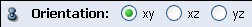

Ports

Orientation

Scale

Filter Show

This port provides three buttons to filter the bars according to the filter mask:
- All: Bars are not filtered,
- On Data: All bars with a filter mask different from 0 are displayed,
- Off Data: All bars with a filter mask equal to 0 are displayed.